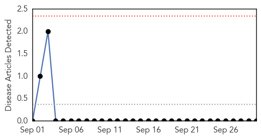
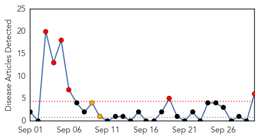
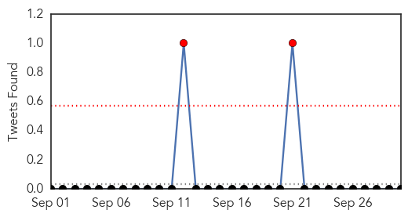
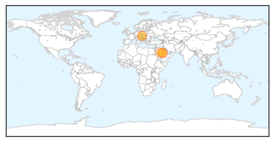

Yellow Fever
30-Day Web Trend
0 alerts, 0 warnings

30-Day Twitter Trend
0 alerts, 0 warnings

Article Locations

Article Confidences

Top Articles:
-
No articles found for Sep 30, 2014
Top Tweets:
-
No tweets found for Sep 30, 2014
MERS
30-Day Web Trend
6 alerts, 2 warnings

30-Day Twitter Trend
2 alerts, 0 warnings

Article Locations
Article Confidences

Top Articles:
- 1.000
- Austria reports first MERS case in Saudi citizen
- 0.995
- Austrian Health Authorities Confirm First Case Of MERS
- 0.986
- First case of Mers virus in Austria
- 0.982
- Austria Reports First MERS Case in Saudi National
- 0.976
- MERS raises its ugly head again
- 0.852
- Lakeridge Health Oshawa staff helps Saudi Arabia battle MERS-CoV infection
Top Tweets:
-
No tweets found for Sep 30, 2014